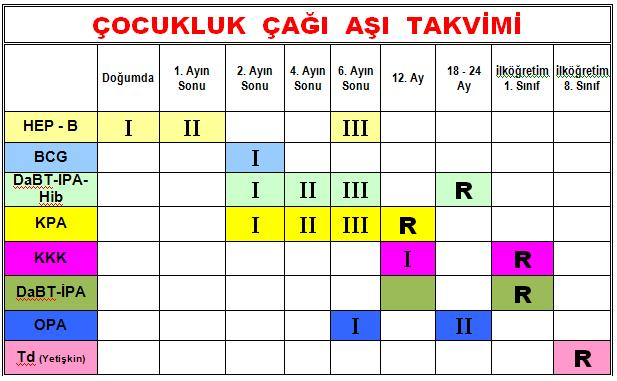
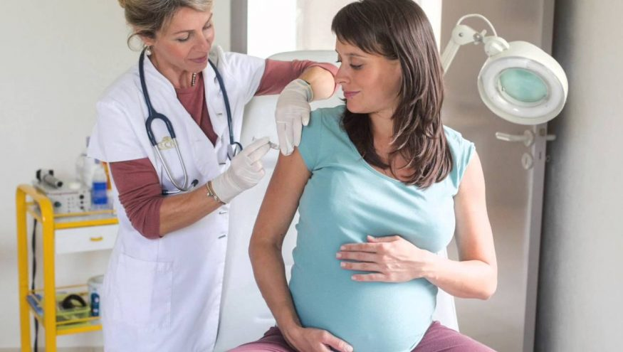

Hamilelikte Aşı
Hamilelik döneminde bilinenin aksine aşı yapılmaktadır. Hamilelikte aşı yapılmasının nedeni; anne adayını ölümcül olabilecek hastalıklardan koruyabilmektir. Hamilelikte yapılan aşılar aynı zamanda anne karnındaki bebeği de ilk aylarda koruyucudur.
Hamilelikte aşı yapılmasının bilinen herhangi bir zararı yoktur. Hatta emzirme dönemi doyunca da aşı yapılmasının herhangi bir zararı yoktur. Hamilelikte hangi aşılar yapılmalı sorusunun cevabını merak ediyorsanız, aşağıda yer alan aşı takvimi bölümümüzü inceleyebilirsiniz.
Hamilelikte aşı takvimi
Hamilelikte Tetanoz aşısı:
Önceden yapılmamışsa; hamileliğin 2. ve 3. 3 aylık dönemlerinde 2 doz tetanoz aşısı yapılır. İlk aşıdan 6 ay sonra 3. doz verilir. Yenidoğan döneminde bebekte gelişebilecek tetanoz ölümcül olabileceğinden, hamilelikte tetanoz aşısı yapılması gereklidir.
Hamilelikte Hepatit B aşısı:
Taşıyıcı annelerin bebeklerine doğumda hastalık bulaştırmamaları için bebek doğar doğmaz ilk 12 saat içerisinde yapılmalıdır. Eşi hepatit B taşıyıcı olan anne adayları ise bu döneme kadar aşı yaptırmamışsa hamilelikte mutlaka aşılanmalı.
Hamilelikte Grip aşısı:
Hamilelikte grip aşısı yaptırmanın herhangi bir olumsuz etkisi yoktur. 3-9. aylar arasındaki anne adaylarına gerektiğinde grip aşısı yaptırmaları öneril
